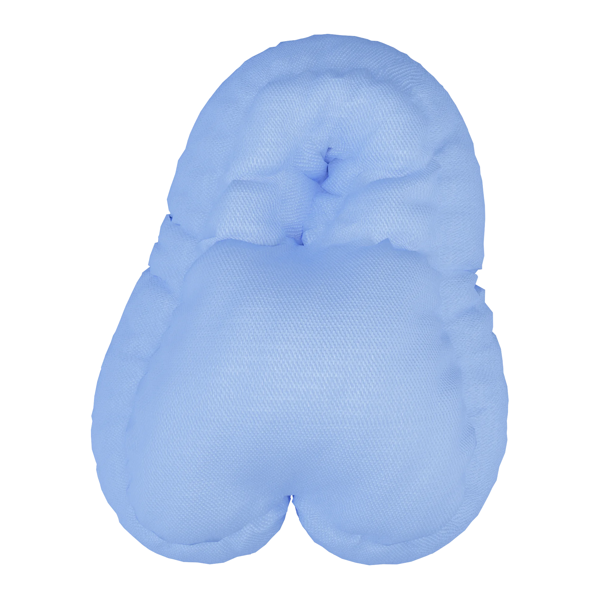

статьи

П чему ы идим сны?


Сны — одна из величайших загадок, волнующая людей на протяжении тысячелетий. Одни восхищаются их яркостью и глубиной, другие видят в них мистические знаки и предостережения. Но почему мы видим сны? Давайте попробуем разобраться!

«С н — это золот я нить, которая связывает здо овье
и наш тело.»?
